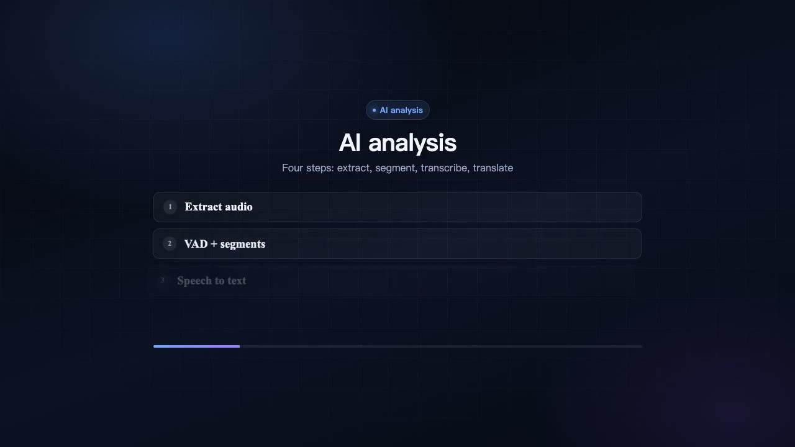
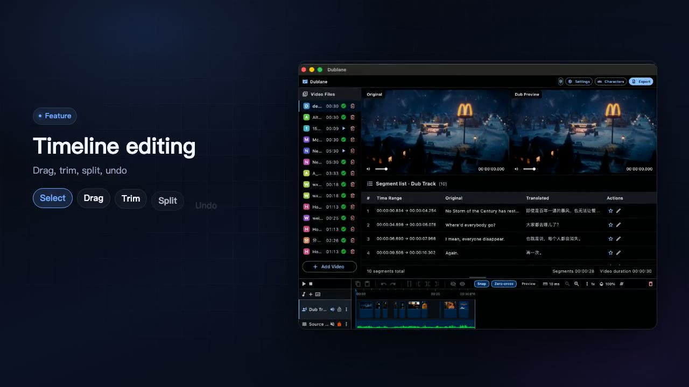
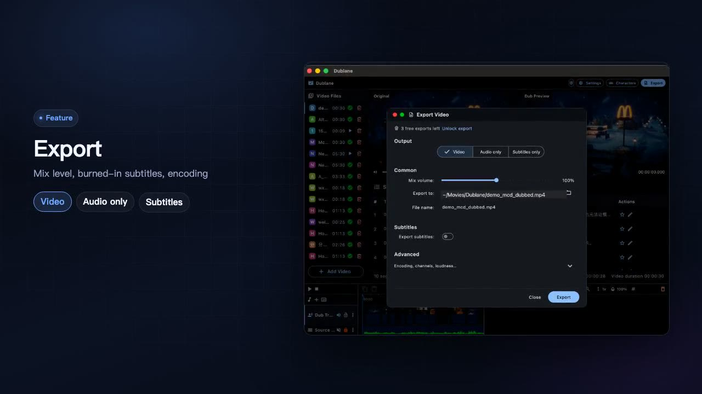
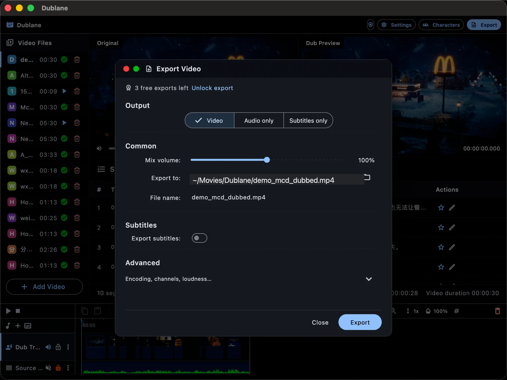
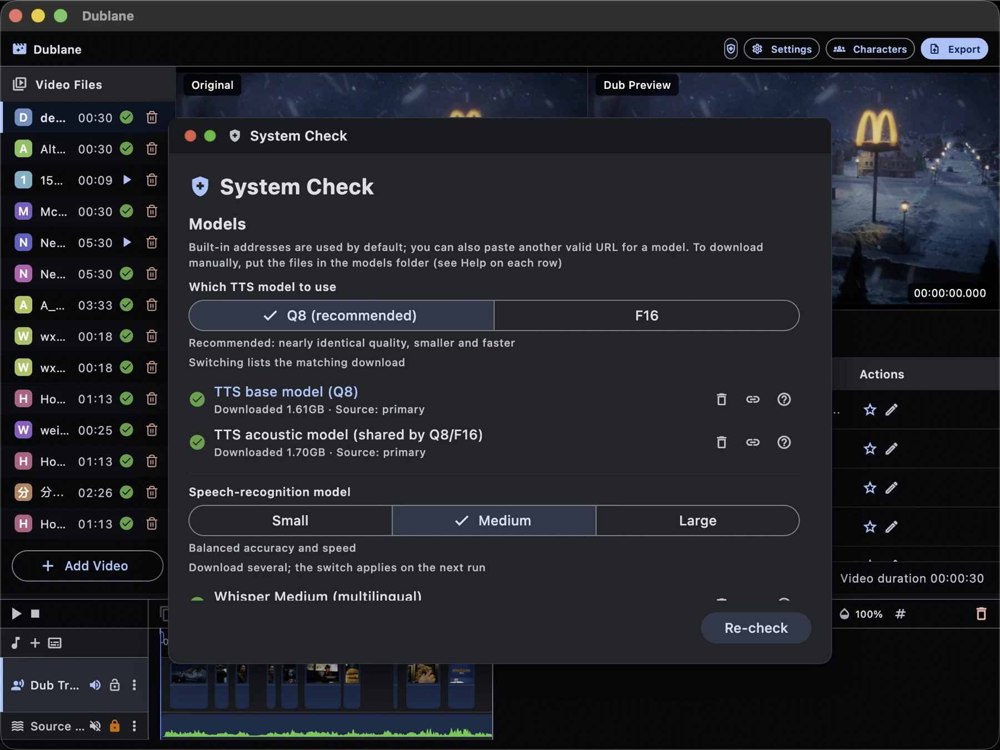
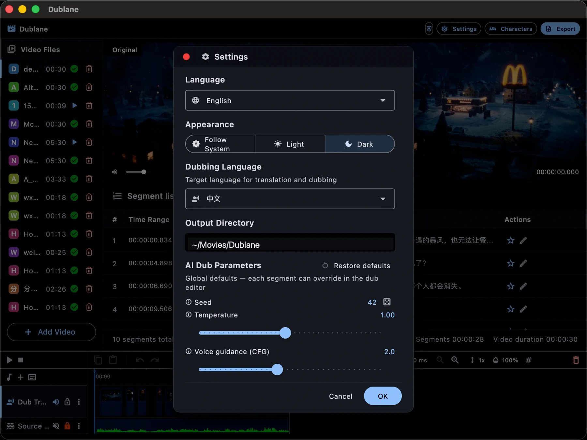

Quick start
Three steps to a finished cut. Before the first run, download the speech models you need in System Check.
Click “Add Video” below the video library on the left and pick a local video or audio file. It is read in place — never copied to a cloud.
Click the play icon on the video row, choose the spoken language and press Start. Segments, source text and translations fill the table.
Check timing and dubbing on the timeline, then hit Export in the top-right: video, audio-only or subtitles.
Importing
Common video and audio formats are supported. Duration, waveforms and thumbnails are generated on import.
- Video: MP4, MOV, MKV, AVI, WebM, M4V and more
- Where files live: your media stays where it is; project data (segments, dubs, subtitles) is stored in the app’s own project folder
AI analysis
Four analysis steps, then dubbing per segment — all on this Mac. The first translation starts the local model, which usually takes 15–30 seconds.

- Spoken language: pick what the video actually says; auto-detect is fine when unsure
- Translate: on by default; the target language comes from Settings → Dubbing Language
- Dub: after analysis, pick a voice in the segment editor and generate the dub per segment
- Standalone preview: open it from the AI analysis window; project subtitles are overlaid during playback. Font, size and the original/translation combination are adjustable and saved per project in
player_subtitles.json, separately from the export style - Re-analyse: clears this project’s generated audio, segments and translations, then runs again
Timeline editing
A clip block is the time range of one dub. Every edit goes into the undo history.

- Select: click a clip; double-click to open the segment editor
- Move: drag the block itself; hold Ctrl to bypass snapping
- Trim: drag the left or right edge
- Split at playhead: the
][icon; trim left / right:⋮[/]⋮ - Merge: select adjacent segments and press merge
- Hide / restore: hidden clips stay in the list and can be restored anytime
- Lock: locked clips cannot be dragged or trimmed
- Nudge: select a clip and press ← →; the step is chosen in the toolbar (10 ms by default)
- Undo / redo: ⌘Z / ⇧⌘Z, also available from the Edit menu
Voices and dubbing
Each segment can have its own voice and speed, a clone of your own voice, stacked audio effects, or vocal-separation cleanup.
- Voice: choose a character or an app-wide voice in the segment editor, preview, then apply
- Clone a voice: import a clean 5–30 second sample, name it, and reuse it across projects
- Character Manager: group voices by project or app, with avatars and previews
- Audio effects: fade in, fade out, fade in/out, loudness normalize, high-pass, low-pass, compressor and reverb — chainable in order
- Vocal separation: run it from the lane menu on the source or an imported track; it produces separate vocals and backing tracks so background noise can be dropped. Recorded dubs can be denoised the same way
Subtitles
Subtitles come from the segment table: source text, translation, or both.
- Style: size, colour, outline, background, position (bottom / centre / top)
- Output: burn into the picture, export a sidecar SRT / ASS, or both
- Fonts: pick a common CJK family in the export window, or choose “Add font” to import your own TTF / OTF / TTC; imported fonts can be deleted anytime
Export
Three output types: the full video, audio only, or subtitle files only.

- Mix volume: 0–200%; above 200% a limiter is added automatically to avoid clipping
- Subtitles: burn in, export SRT, or keep both
- Advanced: codec, channels and loudness live under Advanced
- Picture: H.264 or HEVC; follow the source size or set a custom width × height, fit with black bars or stretch to fill; frame rate, quality or target bitrate (with max rate and buffer) are adjustable, and the estimated size is shown
- HDR: a 10-bit HEVC output keeps BT.2020/PQ; H.264 or 8-bit output is tone-mapped to SDR (BT.709) and asks for confirmation before exporting
- Count: free builds include 5 exports; Pro removes the limit

Tracks and view
Fine-tune editing density and on-screen detail in the multi-track view.
- Lane height: the height button in the toolbar — 1x / 1.5x / 2x
- Horizontal zoom: 1x to 8x, handy for very short clips
- Waveform opacity: the percentage control on the right of the toolbar
- Segment numbers: the # icon shows the ordinal on every clip of every track; off means no numbers anywhere
- Monitor / mute: the headphone icon in the lane header decides whether that track joins the preview and export mix
System Check and models
The shield icon in the top bar opens System Check: bundled tools plus the models you download.

- TTS model: Q8 (smaller, faster) or F16 (larger, finer); the acoustic model is shared
- Speech recognition: Small / Medium / Large — pick for your machine; only what you need
- Translation model: optional; the Gemma terms must be accepted before the first download
- Delete a model: the trash icon on a downloaded row removes the file after a confirmation; download again anytime
- Download address: built-in by default; use the link icon to switch to a mirror or your own URL
Settings
Language, appearance, dubbing target and default dub parameters.

- Language: follow the system or pick one; applies immediately
- Dubbing Language: the target for translation and dubbing
- Output Directory: where exports go by default
- AI Dub Parameters: seed, temperature and voice guidance (CFG); a segment can override them in the editor
Shortcuts
These work on the timeline and in the segment list. While a text field has focus, the field owns them.
| Space | Play / pause |
| ⌘Z / ⇧⌘Z | Undo / redo clip edits (text undo inside a field) |
| ⌘C / ⌘V | Copy / paste clips (text copy/paste inside a field) |
| ← / → | Nudge the selected clip by the toolbar step |
| Esc | Leave full-screen preview |
FAQ
The preview says the file must be opened again.
The source was moved or renamed, or macOS revoked file access after an app update. Choose “Choose file again”, pick the same file and playback resumes — tracks, segments and dubs are kept.
Analysis says a model is missing.
Open System Check from the shield icon and press Download on the matching row. The first download is large, so use a stable connection; the row shows “Downloaded” when it finishes.
What are the free limits?
Free builds can export 5 finished files. Pro removes the export limit. Models, analysis and editing are not limited.
Where do I change the translation target?
Settings → Dubbing Language. Run Translate again (or re-analyse) to regenerate translations and dubs in the new language.
Does it work offline?
Yes. Once the models are downloaded, segmenting, transcription, translation, dubbing and export all run locally.
Is my media uploaded?
No. There is no account system and no media upload; apart from model downloads the app does not need the network. See the privacy policy.